Further Examples¶
In this section we present multiple examples for the mass conservation and semi-diffusive approaches. In addition to this, we provide some examples satisfying the deficiency theorems. Before each example we depict the CellDesigner layout and C-graph generated using the instructions in Generating Presentable C-graphs. Those nodes that represent zero complexes are colored red while regular nodes are green.
Contents
- Further Examples
- Low Deficiency Approach
- Mass Conservation Approach
- Closed graph of Figure 5A of [OMYS17]
- Gene regulatory network with two mutually repressing genes from [OMYS14]
- Enzymatic reaction with inhibition by substrate from [OMBA09]
- Enzymatic reaction with simple substrate cycle from [HC87]
- Signal transduction from [CSRGR05]
- G1/S transition in the cell cycle of Saccharomyces cerevisiae from [CFRS07]
- Figure 6A of [OMYS17]
- Double insulin binding
- p85-p110-PTEN
- Closed version of Figure 4B from [OMYS17]
- Closed version of Figure 4C from [OMYS17]
- Semi-diffusive Approach
Low Deficiency Approach¶
Network 3.13 of [Fei79]¶
 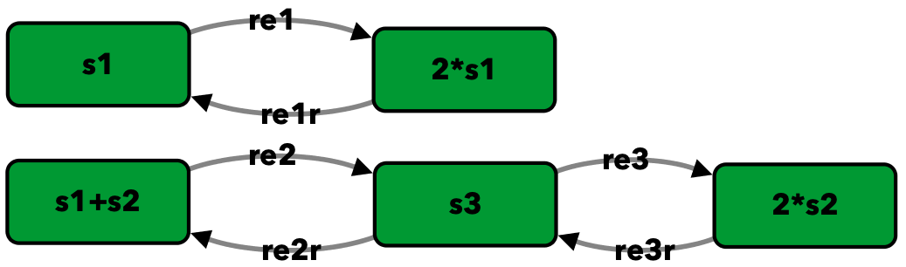
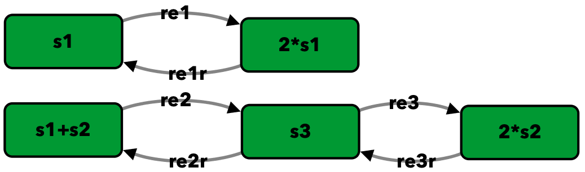
{kind=link}
To run this example download the SBML file and script
run_feinberg_ex3_13. After running this script we obtain
the following output:
Number of species: 3
Number of complexes: 5
Number of reactions: 6
Network deficiency: 0
Reaction graph of the form
reaction -- reaction label:
s1 -> 2*s1 -- re1
2*s1 -> s1 -- re1r
s1+s2 -> s3 -- re2
s3 -> s1+s2 -- re2r
s3 -> 2*s2 -- re3
2*s2 -> s3 -- re3r
By the Deficiency Zero Theorem, there exists within each positive
stoichiometric compatibility class precisely one equilibrium.
Thus, multiple equilibria cannot exist for the network.
The network does not satisfy Deficiency One Theorem.
Network satisfies one of the low deficiency theorems.
One should not run the optimization-based methods.
Figure 1Aii of [OMYS17]¶


To run this example download the SBML file and script
run_fig1Aii. After running this script we obtain the following output:
Number of species: 4
Number of complexes: 6
Number of reactions: 7
Network deficiency: 0
Reaction graph of the form
reaction -- reaction label:
s1+s2 -> s3 -- re1
s3 -> s1+s2 -- re1r
s3 -> s6 -- re2
s1 -> s9 -- re3
s9 -> s1 -- re3r
s2 -> s9 -- re4
s9 -> s2 -- re4r
By the Deficiency Zero Theorem, the differential equations
cannot admit a positive equilibrium or a cyclic composition
trajectory containing a positive composition. Thus, multiple
equilibria cannot exist for the network.
The network does not satisfy Deficiency One Theorem.
Network satisfies one of the low deficiency theorems.
One should not run the optimization-based methods.
Example 3.D.3 of [Fei79]¶
 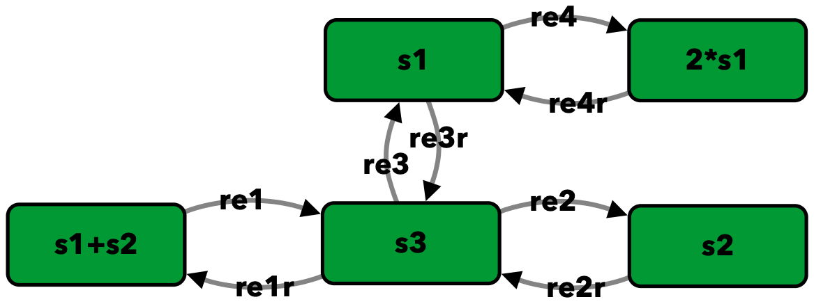
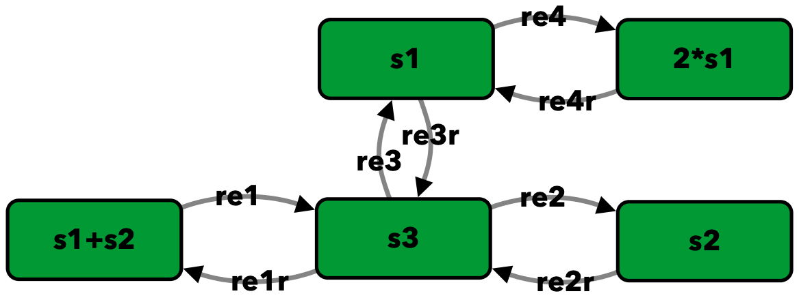
{kind=link}
To run this example download the SBML file and script
run_feinberg_ex_3_D_3. After running this script we
obtain the following output:
Number of species: 3
Number of complexes: 5
Number of reactions: 8
Network deficiency: 1
Reaction graph of the form
reaction -- reaction label:
s1+s2 -> s3 -- re1
s3 -> s1+s2 -- re1r
s3 -> s2 -- re2
s2 -> s3 -- re2r
s3 -> s1 -- re3
s1 -> s3 -- re3r
s1 -> 2*s1 -- re4
2*s1 -> s1 -- re4r
The network does not satisfy Deficiency Zero Theorem.
By the Deficiency One Theorem, the differential equations
admit precisely one equilibrium in each positive stoichiometric
compatibility class. Thus, multiple equilibria cannot exist
for the network.
Network satisfies one of the low deficiency theorems.
One should not run the optimization-based methods.
Mass Conservation Approach¶
Closed graph of Figure 5A of [OMYS17]¶
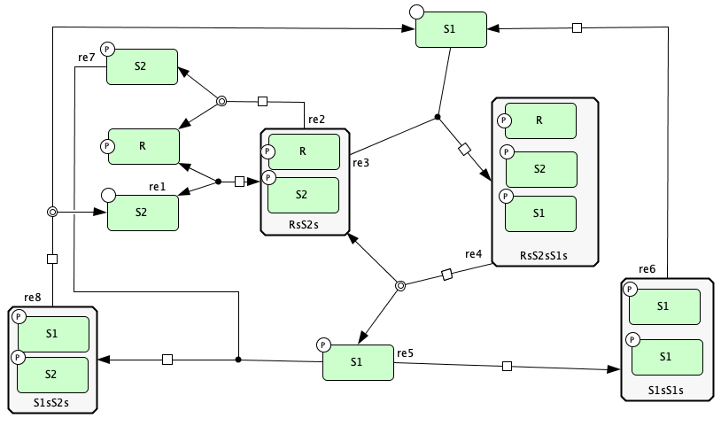 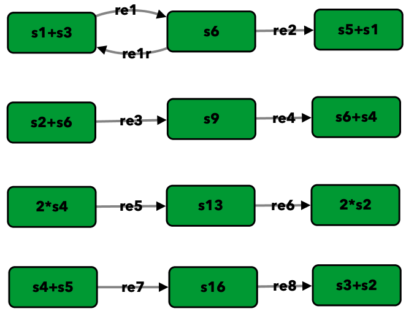{kind=link}
{kind=link}
To run this example download the SBML file and script
run_closed_fig5A. After running this script we obtain the
following output:
Number of species: 9
Number of complexes: 12
Number of reactions: 9
Network deficiency: 2
Reaction graph of the form
reaction -- reaction label:
s1+s3 -> s6 -- re1
s6 -> s1+s3 -- re1r
s6 -> s5+s1 -- re2
s2+s6 -> s9 -- re3
s9 -> s6+s4 -- re4
2*s4 -> s13 -- re5
s13 -> 2*s2 -- re6
s4+s5 -> s16 -- re7
s16 -> s3+s2 -- re8
The network does not satisfy Deficiency Zero Theorem.
The network does not satisfy Deficiency One Theorem.
Creating Equilibrium Manifold ...
Elapsed time for creating Equilibrium Manifold: 1.5645950000000006
Solving for species' concentrations ...
Elapsed time for finding species' concentrations: 0.20860400000000023
Decision Vector:
[re1, re1r, re2, re3, re4, re5, re6, re7, re8, s3, s4, s6]
Species for concentration bounds:
[s1, s2, s5, s9, s13, s16]
Running feasible point method for 100 iterations ...
Elapsed time for feasible point method: 31.838014
Running the multistart optimization ...
Smallest value achieved by objective function: 0.0
Elapsed time for multistart method: 118.78041900000002
Running continuity analysis ...
Elapsed time for continuity analysis: 41.44564199999999
The number of feasible points that satisfy the constraints: 92
Total feasible points that give F(x) = 0: 30
Total number of points that passed final_check: 30
Number of multistability plots found: 9
Elements in params_for_global_min that produce multistability:
[3, 4, 5, 6, 7, 8, 11, 15, 24]
Gene regulatory network with two mutually repressing genes from [OMYS14]¶


To run this example download the SBML file and script
run_irene2014. After running this script we obtain the following
output:
Number of species: 7
Number of complexes: 13
Number of reactions: 10
Network deficiency: 2
Reaction graph of the form
reaction -- reaction label:
s1 -> s1+s2 -- re1
s3 -> s3+s4 -- re2
s1+s4 -> s5 -- re3
s5 -> s1+s4 -- re3r
s3+s2 -> s6 -- re4
s6 -> s3+s2 -- re4r
s6+s2 -> s7 -- re5
s7 -> s6+s2 -- re5r
s2 -> s8 -- re6
s4 -> s8 -- re7
The network does not satisfy Deficiency Zero Theorem.
The network does not satisfy Deficiency One Theorem.
Creating Equilibrium Manifold ...
Elapsed time for creating Equilibrium Manifold: 0.6639610000000005
Solving for species' concentrations ...
Elapsed time for finding species' concentrations: 0.3587790000000002
Decision Vector:
[re1, re2, re3, re3r, re4, re4r, re5, re5r, re6, re7, s2, s4]
Species for concentration bounds:
[s1, s3, s5, s6, s7]
Running feasible point method for 100 iterations ...
Elapsed time for feasible point method: 27.412999999999997
Running the multistart optimization ...
Smallest value achieved by objective function: 0.0
Elapsed time for multistart method: 119.703018
Running continuity analysis ...
Elapsed time for continuity analysis: 112.23523899999995
The number of feasible points that satisfy the constraints: 96
Total feasible points that give F(x) = 0: 93
Total number of points that passed final_check: 93
Number of multistability plots found: 21
Elements in params_for_global_min that produce multistability:
[13, 14, 25, 27, 29, 30, 32, 39, 46, 48, 49, 53, 58, 64, 66, 73, 75, 78, 82, 88, 90]
Enzymatic reaction with inhibition by substrate from [OMBA09]¶
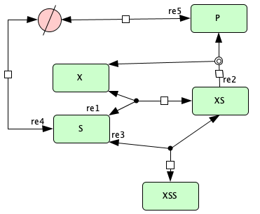 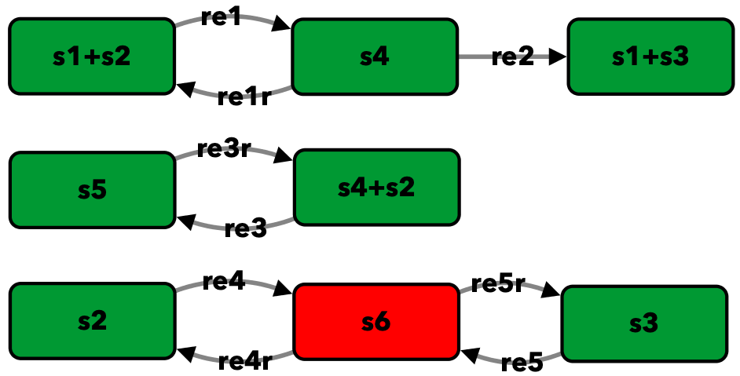{kind=link}
{kind=link}
To run this example download the SBML file and script
run_irene2009. After running this script we obtain the following
output:
Number of species: 5
Number of complexes: 8
Number of reactions: 9
Network deficiency: 1
Reaction graph of the form
reaction -- reaction label:
s1+s2 -> s4 -- re1
s4 -> s1+s2 -- re1r
s4 -> s1+s3 -- re2
s4+s2 -> s5 -- re3
s5 -> s4+s2 -- re3r
s2 -> s6 -- re4
s6 -> s2 -- re4r
s3 -> s6 -- re5
s6 -> s3 -- re5r
The network does not satisfy Deficiency Zero Theorem.
The network does not satisfy Deficiency One Theorem.
Creating Equilibrium Manifold ...
Elapsed time for creating Equilibrium Manifold: 0.12490000000000023
Solving for species' concentrations ...
Elapsed time for finding species' concentrations: 0.1801330000000001
Decision Vector:
[re1, re1r, re2, re3, re3r, re4, re4r, re5, re5r, s2]
Species for concentration bounds:
[s1, s3, s4, s5]
Running feasible point method for 100 iterations ...
Elapsed time for feasible point method: 17.950815
Running the multistart optimization ...
Smallest value achieved by objective function: 0.0
Elapsed time for multistart method: 73.953789
Running continuity analysis ...
Elapsed time for continuity analysis: 77.51778000000002
The number of feasible points that satisfy the constraints: 100
Total feasible points that give F(x) = 0: 83
Total number of points that passed final_check: 83
Number of multistability plots found: 50
Elements in params_for_global_min that produce multistability:
[1, 6, 7, 12, 14, 16, 17, 19, 20, 21, 22, 23, 25, 26, 29, 31, 32, 35, 36, 39, 40, 41, 42, 45, 46, 47, 49, 51, 52, 54, 55, 56, 57, 58, 59, 60, 61, 65, 67, 68, 70, 71, 72, 73, 76, 77, 78, 79, 80, 81]
Enzymatic reaction with simple substrate cycle from [HC87]¶
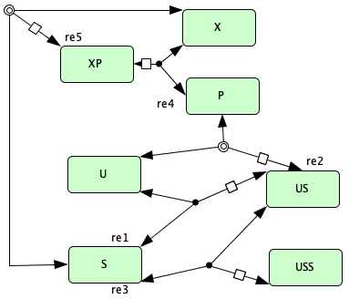{kind=link}

To run this example download the SBML file and script
run_hervagault_canu. After running this script we obtain
the following output:
Number of species: 7
Number of complexes: 8
Number of reactions: 10
Network deficiency: 1
Reaction graph of the form
reaction -- reaction label:
s1+s2 -> s3 -- re1
s3 -> s1+s2 -- re1r
s3 -> s1+s4 -- re2
s1+s4 -> s3 -- re2r
s3+s2 -> s5 -- re3
s5 -> s3+s2 -- re3r
s6+s4 -> s7 -- re4
s7 -> s6+s4 -- re4r
s7 -> s6+s2 -- re5
s6+s2 -> s7 -- re5r
The network does not satisfy Deficiency Zero Theorem.
The network does not satisfy Deficiency One Theorem.
Creating Equilibrium Manifold ...
Elapsed time for creating Equilibrium Manifold: 0.24900900000000004
Solving for species' concentrations ...
Elapsed time for finding species' concentrations: 0.8099070000000008
Decision Vector:
[re1, re1r, re2, re2r, re3, re3r, re4, re4r, re5, re5r, s2, s4, s7]
Species for concentration bounds:
[s1, s3, s5, s6]
Running feasible point method for 100 iterations ...
Elapsed time for feasible point method: 22.274808
Running the multistart optimization ...
Smallest value achieved by objective function: 0.0
Elapsed time for multistart method: 172.20124700000002
Running continuity analysis ...
Elapsed time for continuity analysis: 19.03241
The number of feasible points that satisfy the constraints: 93
Total feasible points that give F(x) = 0: 24
Total number of points that passed final_check: 24
Number of multistability plots found: 20
Elements in params_for_global_min that produce multistability:
[1, 2, 3, 5, 6, 9, 10, 11, 12, 13, 14, 15, 16, 17, 18, 19, 20, 21, 22, 23]
Signal transduction from [CSRGR05]¶


To run this example download the SBML file and script
run_conradi2005. After running this script we obtain the
following output:
Number of species: 7
Number of complexes: 9
Number of reactions: 9
Network deficiency: 2
Reaction graph of the form
reaction -- reaction label:
s1+s2 -> s3 -- re1
s3 -> s1+s2 -- re1r
s3 -> s4+s2 -- re2
s4+s5 -> s6 -- re3
s6 -> s4+s5 -- re3r
s6 -> s1+s5 -- re4
s1+s4 -> s7 -- re5
s7 -> s1+s4 -- re5r
s7 -> 2*s4 -- re6
The network does not satisfy Deficiency Zero Theorem.
The network does not satisfy Deficiency One Theorem.
Creating Equilibrium Manifold ...
Elapsed time for creating Equilibrium Manifold: 0.4383759999999999
Solving for species' concentrations ...
Elapsed time for finding species' concentrations: 0.6672840000000004
Decision Vector:
[re1, re1r, re2, re3, re3r, re4, re5, re5r, re6, s2, s4, s7]
Species for concentration bounds:
[s1, s3, s5, s6]
Running feasible point method for 100 iterations ...
Elapsed time for feasible point method: 4.570956999999999
Running the multistart optimization ...
Smallest value achieved by objective function: 0.0
Elapsed time for multistart method: 113.44187000000001
Running continuity analysis ...
Elapsed time for continuity analysis: 34.630101999999994
The number of feasible points that satisfy the constraints: 99
Total feasible points that give F(x) = 0: 38
Total number of points that passed final_check: 38
Number of multistability plots found: 30
Elements in params_for_global_min that produce multistability:
[1, 2, 3, 4, 5, 6, 7, 8, 9, 11, 14, 15, 17, 19, 20, 22, 23, 24, 25, 26, 27, 28, 29, 30, 31, 33, 34, 35, 36, 37]
G1/S transition in the cell cycle of Saccharomyces cerevisiae from [CFRS07]¶
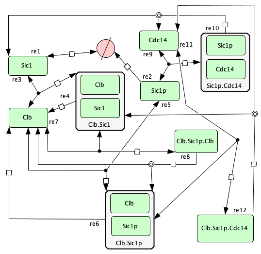 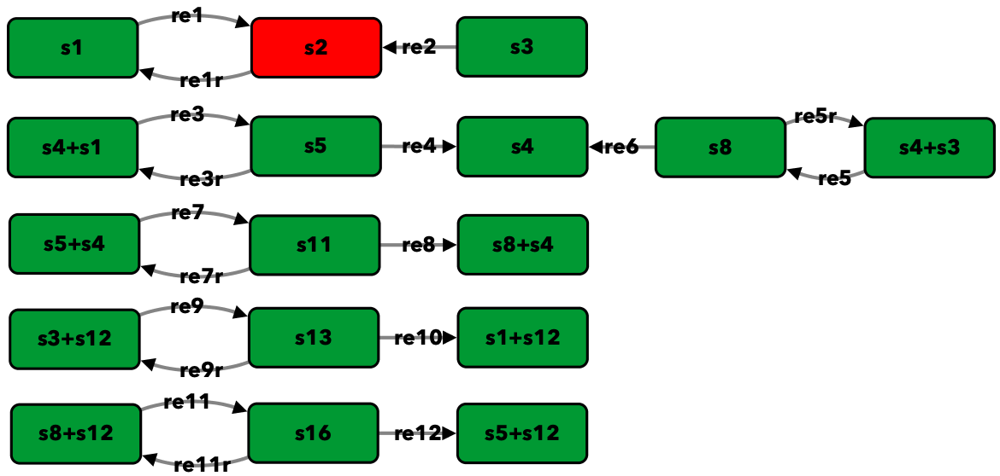{kind=link}
{kind=link}
To run this example download the SBML file and script
run_conradi2007. After running this
script we obtain the following output:
Number of species: 9
Number of complexes: 17
Number of reactions: 18
Network deficiency: 5
Reaction graph of the form
reaction -- reaction label:
s1 -> s2 -- re1
s2 -> s1 -- re1r
s3 -> s2 -- re2
s4+s1 -> s5 -- re3
s5 -> s4+s1 -- re3r
s5 -> s4 -- re4
s4+s3 -> s8 -- re5
s8 -> s4+s3 -- re5r
s8 -> s4 -- re6
s5+s4 -> s11 -- re7
s11 -> s5+s4 -- re7r
s11 -> s8+s4 -- re8
s3+s12 -> s13 -- re9
s13 -> s3+s12 -- re9r
s13 -> s1+s12 -- re10
s8+s12 -> s16 -- re11
s16 -> s8+s12 -- re11r
s16 -> s5+s12 -- re12
The network does not satisfy Deficiency Zero Theorem.
The network does not satisfy Deficiency One Theorem.
Creating Equilibrium Manifold ...
Elapsed time for creating Equilibrium Manifold: 2.713166
Solving for species' concentrations ...
Elapsed time for finding species' concentrations: 123.89024500000001
Decision Vector:
[re1, re1r, re2, re3, re3r, re4, re5, re5r, re6, re7, re7r, re8, re9, re9r, re10, re11, re11r, re12, s4, s12]
Species for concentration bounds:
[s1, s3, s5, s8, s11, s13, s16]
Running feasible point method for 100 iterations ...
Elapsed time for feasible point method: 89.85705200000001
Running the multistart optimization ...
Smallest value achieved by objective function: 0.0
Elapsed time for multistart method: 1227.066971
Running continuity analysis ...
Elapsed time for continuity analysis: 18.148615999999947
The number of feasible points that satisfy the constraints: 100
Total feasible points that give F(x) = 0: 13
Total number of points that passed final_check: 13
Number of multistability plots found: 11
Elements in params_for_global_min that produce multistability:
[1, 2, 3, 4, 5, 6, 7, 8, 10, 11, 12]
Figure 6A of [OMYS17]¶


To run this example download the SBML file and script
run_Fig6A. After running this script we obtain the following output:
Number of species: 13
Number of complexes: 19
Number of reactions: 17
Network deficiency: 3
Reaction graph of the form
reaction -- reaction label:
s1 -> s2 -- re1
s2 -> s1 -- re1r
s3 -> s4 -- re2
s4 -> s3 -- re2r
s3+s1 -> s5 -- re3
s5 -> s3+s1 -- re3r
s5 -> s2+s4 -- re4
s2+s4 -> s5 -- re4r
s5+s6 -> s7 -- re5
s7 -> s5+s6 -- re5r
s7 -> s5+s10 -- re6
s7+s11 -> s12 -- re7
s12 -> s7+s16 -- re8
2*s16 -> s17 -- re9
s17 -> 2*s11 -- re10
s16+s10 -> s20 -- re11
s20 -> s11+s6 -- re12
The network does not satisfy Deficiency Zero Theorem.
The network does not satisfy Deficiency One Theorem.
Creating Equilibrium Manifold ...
Elapsed time for creating Equilibrium Manifold: 108.00370000000001
Solving for species' concentrations ...
Elapsed time for finding species' concentrations: 28.19600299999999
Decision Vector:
[re1, re1r, re2, re2r, re3, re3r, re4, re4r, re5, re5r, re6, re7, re8, re9, re10, re11, re12, s4, s6, s11, s16]
Species for concentration bounds:
[s1, s2, s3, s5, s7, s10, s12, s17, s20]
Running feasible point method for 100 iterations ...
Elapsed time for feasible point method: 249.93427100000002
Running the multistart optimization ...
Smallest value achieved by objective function: 0.0
Elapsed time for multistart method: 278.2530290000001
Running continuity analysis ...
Elapsed time for continuity analysis: 1.983425000000011
The number of feasible points that satisfy the constraints: 49
Total feasible points that give F(x) = 0: 1
Total number of points that passed final_check: 1
Number of multistability plots found: 1
Elements in params_for_global_min that produce multistability:
[0]
Double insulin binding¶


To run this example download the SBML file and script
run_double_insulin_binding.
After running this script we obtain the following output:
Number of species: 8
Number of complexes: 12
Number of reactions: 11
Network deficiency: 2
Reaction graph of the form
reaction -- reaction label:
s1+s2 -> s3 -- re1
s3 -> s1+s2 -- re1r
s3+s2 -> s4 -- re2
s4 -> s3+s2 -- re2r
s3+s5 -> s6 -- re3
s6 -> s3+s5 -- re3r
s6 -> s3+s9 -- re4
s4+s5 -> s10 -- re5
s10 -> s4+s5 -- re5r
s10 -> s4+s9 -- re6
s9 -> s5 -- re7
The network does not satisfy Deficiency Zero Theorem.
The network does not satisfy Deficiency One Theorem.
Creating Equilibrium Manifold ...
Elapsed time for creating Equilibrium Manifold: 0.9201350000000001
Solving for species' concentrations ...
Elapsed time for finding species' concentrations: 0.5085129999999998
Decision Vector:
[re1, re1r, re2, re2r, re3, re3r, re4, re5, re5r, re6, re7, s2, s5, s10]
Species for concentration bounds:
[s1, s3, s4, s6, s9]
Running feasible point method for 100 iterations ...
Elapsed time for feasible point method: 30.984338
Running the multistart optimization ...
Smallest value achieved by objective function: 2.3317319454459066e-31
Elapsed time for multistart method: 116.50619499999999
Running continuity analysis ...
Elapsed time for continuity analysis: 102.63304
The number of feasible points that satisfy the constraints: 96
Total feasible points that give F(x) = 0: 67
Total number of points that passed final_check: 67
Number of multistability plots found: 1
Elements in params_for_global_min that produce multistability:
[17]
p85-p110-PTEN¶
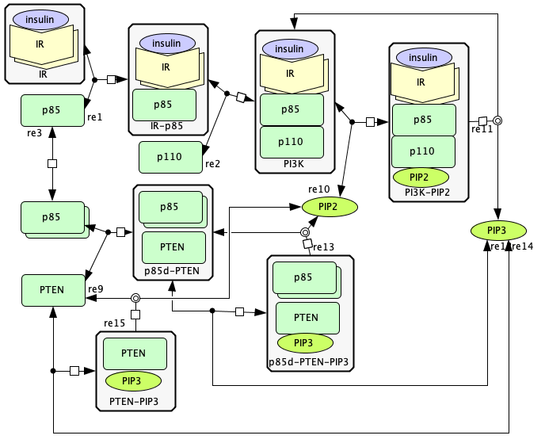 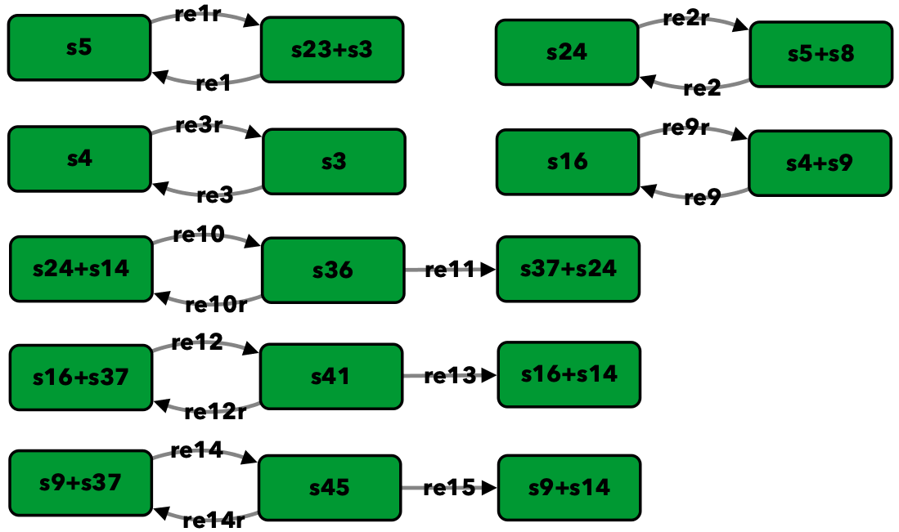{kind=link}
{kind=link}
To run this example download the SBML file and script
run_p85-p110-PTEN. After running this script we obtain the
following output:
Number of species: 13
Number of complexes: 17
Number of reactions: 17
Network deficiency: 2
Reaction graph of the form
reaction -- reaction label:
s23+s3 -> s5 -- re1
s5 -> s23+s3 -- re1r
s5+s8 -> s24 -- re2
s24 -> s5+s8 -- re2r
s3 -> s4 -- re3
s4 -> s3 -- re3r
s4+s9 -> s16 -- re9
s16 -> s4+s9 -- re9r
s24+s14 -> s36 -- re10
s36 -> s24+s14 -- re10r
s36 -> s37+s24 -- re11
s16+s37 -> s41 -- re12
s41 -> s16+s37 -- re12r
s41 -> s16+s14 -- re13
s9+s37 -> s45 -- re14
s45 -> s9+s37 -- re14r
s45 -> s9+s14 -- re15
The network does not satisfy Deficiency Zero Theorem.
The network does not satisfy Deficiency One Theorem.
Creating Equilibrium Manifold ...
Elapsed time for creating Equilibrium Manifold: 13.720093000000002
Solving for species' concentrations ...
Elapsed time for finding species' concentrations: 2.910533000000001
Decision Vector:
[re1, re1r, re2, re2r, re3, re3r, re9, re9r, re10, re10r, re11, re12, re12r, re13, re14, re14r, re15, s8, s9, s23, s24, s37]
Species for concentration bounds:
[s3, s4, s5, s14, s16, s36, s41, s45]
Running feasible point method for 100 iterations ...
Elapsed time for feasible point method: 133.578998
Running the multistart optimization ...
Smallest value achieved by objective function: 0.0
Elapsed time for multistart method: 219.64752199999995
Running continuity analysis ...
Elapsed time for continuity analysis: 667.71624
The number of feasible points that satisfy the constraints: 60
Total feasible points that give F(x) = 0: 43
Total number of points that passed final_check: 43
Number of multistability plots found: 5
Elements in params_for_global_min that produce multistability:
[6, 16, 21, 27, 36]
Closed version of Figure 4B from [OMYS17]¶


To run this example download the SBML file and script
run_Fig4B_closed. After running this
script we obtain the following output:
Number of species: 6
Number of complexes: 7
Number of reactions: 8
Network deficiency: 1
Reaction graph of the form
reaction -- reaction label:
s1+s3 -> s4 -- re1
s4 -> s1+s3 -- re1r
s5 -> s2+s3 -- re2
s2+s3 -> s5 -- re2r
s2+s4 -> s6 -- re3
s6 -> s2+s4 -- re3r
s6 -> s1+s5 -- re4
s1+s5 -> s6 -- re4r
The network does not satisfy Deficiency Zero Theorem.
The network does not satisfy Deficiency One Theorem.
Creating Equilibrium Manifold ...
Elapsed time for creating Equilibrium Manifold: 0.09931699999999966
Solving for species' concentrations ...
Elapsed time for finding species' concentrations: 0.6209340000000001
Decision Vector:
[re1, re1r, re2, re2r, re3, re3r, re4, re4r, s3, s4, s5]
Species for concentration bounds:
[s1, s2, s6]
Running feasible point method for 10000 iterations ...
Elapsed time for feasible point method: 121.99213200000001
Running the multistart optimization ...
Smallest value achieved by objective function: 3.0653012943157734e-09
Elapsed time for multistart method: 10424.801325999999
The number of feasible points that satisfy the constraints: 9996
Total feasible points that give F(x) = 0: 0
Total number of points that passed final_check: 0
Closed version of Figure 4C from [OMYS17]¶
 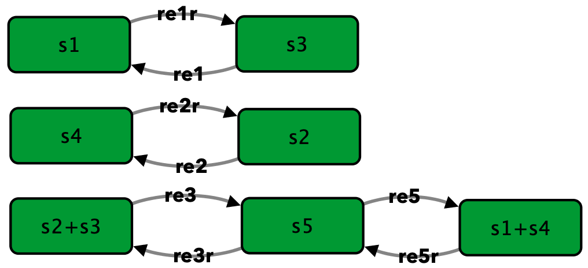
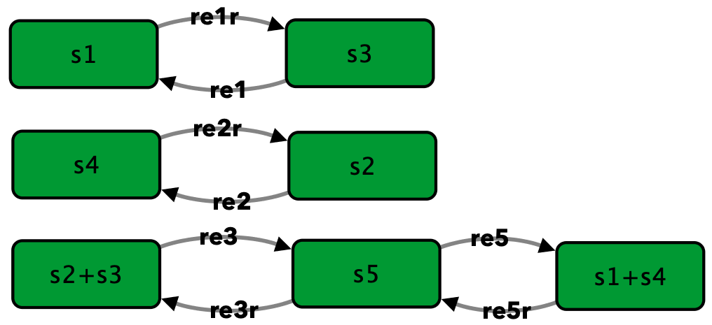
{kind=link}
To run this example download the SBML file and script
run_Fig4C_closed. After running this script we obtain the
following output:
Number of species: 5
Number of complexes: 7
Number of reactions: 8
Network deficiency: 1
Reaction graph of the form
reaction -- reaction label:
s3 -> s1 -- re1
s1 -> s3 -- re1r
s2 -> s4 -- re2
s4 -> s2 -- re2r
s2+s3 -> s5 -- re3
s5 -> s2+s3 -- re3r
s5 -> s1+s4 -- re5
s1+s4 -> s5 -- re5r
The network does not satisfy Deficiency Zero Theorem.
The network does not satisfy Deficiency One Theorem.
Creating Equilibrium Manifold ...
Elapsed time for creating Equilibrium Manifold: 0.08830100000000041
Solving for species' concentrations ...
Elapsed time for finding species' concentrations: 0.5211290000000002
Decision Vector:
[re1, re1r, re2, re2r, re3, re3r, re5, re5r, s3, s4]
Species for concentration bounds:
[s1, s2, s5]
Running feasible point method for 10000 iterations ...
Elapsed time for feasible point method: 699.610803
Running the multistart optimization ...
Smallest value achieved by objective function: 2.2272143587977585e-10
Elapsed time for multistart method: 7437.484507
The number of feasible points that satisfy the constraints: 9961
Total feasible points that give F(x) = 0: 0
Total number of points that passed final_check: 0
Semi-diffusive Approach¶
Figure 5B of [OMYS17]¶
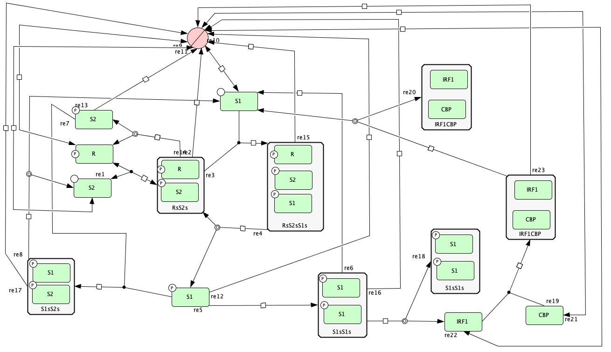{kind=link}

To run this example download the SBML file and script
run_open_fig5B. After running this script we obtain the
following output:
Number of species: 12
Number of complexes: 24
Number of reactions: 29
Network deficiency: 11
Reaction graph of the form
reaction -- reaction label:
s1+s3 -> s6 -- re1
s6 -> s1+s3 -- re1r
s6 -> s5+s1 -- re2
s2+s6 -> s9 -- re3
s9 -> s6+s4 -- re4
2*s4 -> s13 -- re5
s13 -> 2*s2 -- re6
s4+s5 -> s16 -- re7
s16 -> s3+s2 -- re8
s19 -> s1 -- re9
s1 -> s19 -- re9r
s19 -> s2 -- re10
s2 -> s19 -- re10r
s19 -> s3 -- re11
s3 -> s19 -- re11r
s4 -> s19 -- re12
s5 -> s19 -- re13
s6 -> s19 -- re14
s9 -> s19 -- re15
s13 -> s19 -- re16
s16 -> s19 -- re17
s13 -> s13+s20 -- re18
s20+s21 -> s22 -- re19
s22 -> s22+s2 -- re20
s21 -> s19 -- re21
s19 -> s21 -- re21r
s20 -> s19 -- re22
s19 -> s20 -- re22r
s22 -> s19 -- re23
The network does not satisfy Deficiency Zero Theorem.
The network does not satisfy Deficiency One Theorem.
Decision vector for optimization:
[v_2, v_3, v_4, v_5, v_6, v_8, v_11, v_13, v_15, v_18, v_20, v_21, v_22, v_24, v_25, v_27, v_29]
Reaction labels for decision vector:
['re1r', 're2', 're3', 're4', 're5', 're7', 're9r', 're10r', 're11r', 're14', 're16', 're17', 're18', 're20', 're21', 're22', 're23']
Key species:
['s1', 's2', 's3', 's20', 's21']
Non key species:
['s4', 's5', 's6', 's9', 's13', 's16', 's22']
Boundary species:
['s19']
Running feasible point method for 50 iterations ...
Elapsed time for feasible point method: 15.371807999999998
Running the multistart optimization ...
Smallest value achieved by objective function: 0.0
Elapsed time for multistart method: 278.575646
Running continuity analysis ...
Elapsed time for continuity analysis: 46.75262300000003
The number of feasible points that satisfy the constraints: 50
Total feasible points that give F(x) = 0: 21
Total number of points that passed final_check: 21
Number of multistability plots found: 3
Elements in params_for_global_min that produce multistability:
[2, 12, 20]
Open version of Figure 5A from [OMYS17]¶
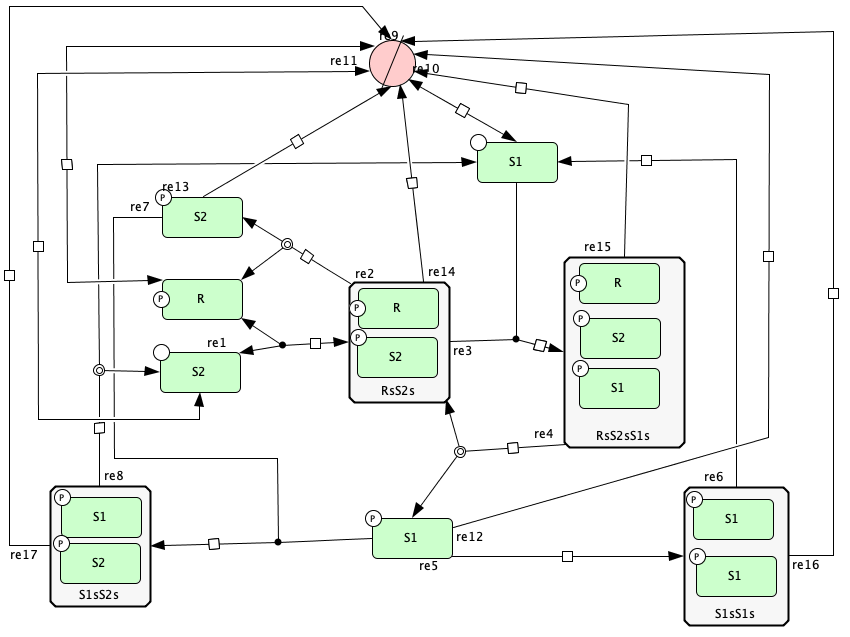{kind=link}

To run this example download the SBML file and script
run_open_fig5A. After running this script we obtain the
following output:
Number of species: 9
Number of complexes: 18
Number of reactions: 21
Network deficiency: 8
Reaction graph of the form
reaction -- reaction label:
s1+s3 -> s6 -- re1
s6 -> s1+s3 -- re1r
s6 -> s5+s1 -- re2
s2+s6 -> s9 -- re3
s9 -> s6+s4 -- re4
2*s4 -> s13 -- re5
s13 -> 2*s2 -- re6
s4+s5 -> s16 -- re7
s16 -> s3+s2 -- re8
s19 -> s1 -- re9
s1 -> s19 -- re9r
s19 -> s2 -- re10
s2 -> s19 -- re10r
s19 -> s3 -- re11
s3 -> s19 -- re11r
s4 -> s19 -- re12
s5 -> s19 -- re13
s6 -> s19 -- re14
s9 -> s19 -- re15
s13 -> s19 -- re16
s16 -> s19 -- re17
The network does not satisfy Deficiency Zero Theorem.
The network does not satisfy Deficiency One Theorem.
Decision vector for optimization:
[v_2, v_3, v_4, v_5, v_6, v_8, v_11, v_13, v_15, v_18, v_20, v_21]
Reaction labels for decision vector:
['re1r', 're2', 're3', 're4', 're5', 're7', 're9r', 're10r', 're11r', 're14', 're16', 're17']
Key species:
['s1', 's2', 's3']
Non key species:
['s4', 's5', 's6', 's9', 's13', 's16']
Boundary species:
['s19']
Running feasible point method for 100 iterations ...
Elapsed time for feasible point method: 21.670934000000003
Running the multistart optimization ...
Smallest value achieved by objective function: 0.0
Elapsed time for multistart method: 109.49520600000002
Running continuity analysis ...
Elapsed time for continuity analysis: 5.927085000000005
The number of feasible points that satisfy the constraints: 100
Total feasible points that give F(x) = 0: 5
Total number of points that passed final_check: 1
Number of multistability plots found: 1
Elements in params_for_global_min that produce multistability:
[0]
Figure 4B from [OMYS17]¶
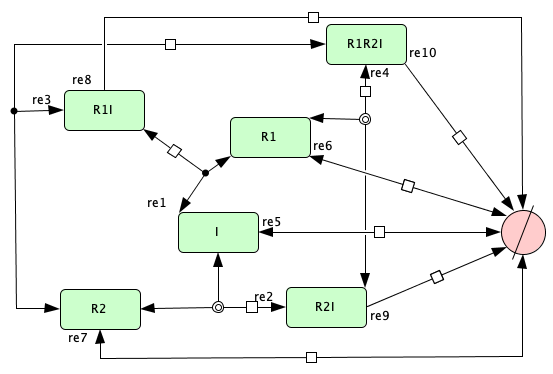 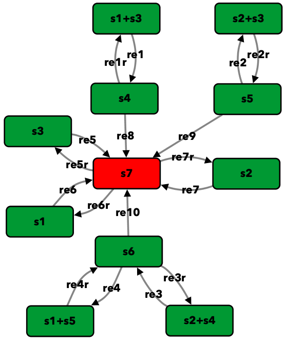{kind=link}
{kind=link}
To run this example download the SBML file and script
run_Fig4B_open. After running this script we obtain the
following output:
Number of species: 6
Number of complexes: 11
Number of reactions: 17
Network deficiency: 4
Reaction graph of the form
reaction -- reaction label:
s1+s3 -> s4 -- re1
s4 -> s1+s3 -- re1r
s5 -> s2+s3 -- re2
s2+s3 -> s5 -- re2r
s2+s4 -> s6 -- re3
s6 -> s2+s4 -- re3r
s6 -> s1+s5 -- re4
s1+s5 -> s6 -- re4r
s3 -> s7 -- re5
s7 -> s3 -- re5r
s1 -> s7 -- re6
s7 -> s1 -- re6r
s2 -> s7 -- re7
s7 -> s2 -- re7r
s4 -> s7 -- re8
s5 -> s7 -- re9
s6 -> s7 -- re10
The network does not satisfy Deficiency Zero Theorem.
The network does not satisfy Deficiency One Theorem.
Decision vector for optimization:
[v_2, v_4, v_5, v_6, v_7, v_8, v_9, v_11, v_13, v_15, v_16]
Reaction labels for decision vector:
['re1r', 're2r', 're3', 're3r', 're4', 're4r', 're5', 're6', 're7', 're8', 're9']
Key species:
['s1', 's2', 's3']
Non key species:
['s4', 's5', 's6']
Boundary species:
['s7']
Running feasible point method for 10000 iterations ...
Elapsed time for feasible point method: 268.53081000000003
Running the multistart optimization ...
Smallest value achieved by objective function: 2.304503779693441e-10
Elapsed time for multistart method: 8503.097677999998
The number of feasible points that satisfy the constraints: 10000
Total feasible points that give F(x) = 0: 0
Total number of points that passed final_check: 0
Figure 4C from [OMYS17]¶
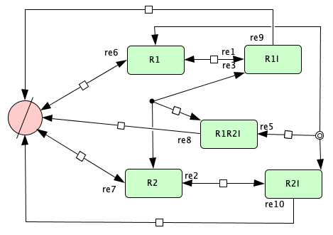 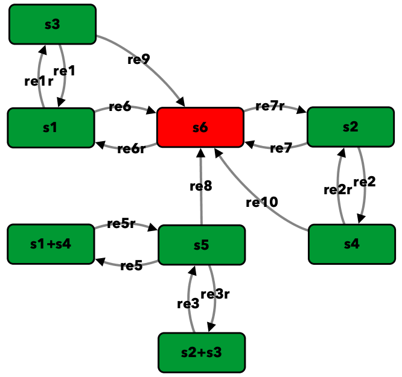{kind=link}
{kind=link}
To run this example download the SBML file and script
run_Fig4C_open. After running this script we obtain the
following output:
Number of species: 5
Number of complexes: 8
Number of reactions: 15
Network deficiency: 2
Reaction graph of the form
reaction -- reaction label:
s3 -> s1 -- re1
s1 -> s3 -- re1r
s2 -> s4 -- re2
s4 -> s2 -- re2r
s2+s3 -> s5 -- re3
s5 -> s2+s3 -- re3r
s5 -> s1+s4 -- re5
s1+s4 -> s5 -- re5r
s1 -> s6 -- re6
s6 -> s1 -- re6r
s2 -> s6 -- re7
s6 -> s2 -- re7r
s5 -> s6 -- re8
s3 -> s6 -- re9
s4 -> s6 -- re10
The network does not satisfy Deficiency Zero Theorem.
The network does not satisfy Deficiency One Theorem.
Decision vector for optimization:
[v_2, v_4, v_5, v_6, v_7, v_8, v_9, v_11, v_14, v_15]
Reaction labels for decision vector:
['re1r', 're2r', 're3', 're3r', 're5', 're5r', 're6', 're7', 're9', 're10']
Key species:
['s1', 's2']
Non key species:
['s3', 's4', 's5']
Boundary species:
['s6']
Running feasible point method for 10000 iterations ...
Elapsed time for feasible point method: 215.59860999999998
Running the multistart optimization ...
Smallest value achieved by objective function: 4.5692676949898025e-10
Elapsed time for multistart method: 4489.723483
The number of feasible points that satisfy the constraints: 10000
Total feasible points that give F(x) = 0: 0
Total number of points that passed final_check: 0